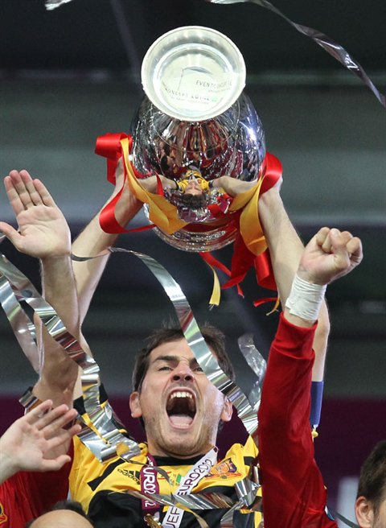

Iker Casillas ocupa um espaço especial na história dos goleiros. Formado pelo Real Madrid, titular da equipe principal ainda na adolescência e capitão da geração mais vitoriosa da seleção espanhola, ele atravessou diferentes períodos do futebol europeu sem perder a capacidade de decidir partidas.
Apelidado de “San Iker”, não era o goleiro mais alto nem o mais imponente fisicamente de sua geração. Sua grandeza foi construída por outras características: velocidade de reação, explosão, posicionamento, coragem nos confrontos individuais e uma habilidade incomum para realizar defesas difíceis em momentos de enorme pressão.
Foram 725 partidas oficiais e 19 títulos pelo Real Madrid. Pela Espanha, disputou 167 jogos e levantou a Eurocopa de 2008, a Copa do Mundo de 2010 e a Eurocopa de 2012 como capitão. A carreira ainda teve quatro temporadas no Porto, antes de ser interrompida por um problema cardíaco e encerrada oficialmente em 2020.
Das categorias de base à estreia
Iker Casillas Fernández nasceu em 20 de maio de 1981, em Móstoles, município da Comunidade de Madri. Sua relação com o Real começou cedo: ingressou nas categorias de base do clube aos nove anos e percorreu praticamente todo o processo de formação até chegar à equipe principal.
A estreia oficial aconteceu em 12 de setembro de 1999. Aos 18 anos, Casillas foi titular no empate por 2 a 2 com o Athletic Bilbao, no estádio San Mamés, pelo Campeonato Espanhol. A oportunidade surgiu em um momento de necessidade para o clube, mas o jovem goleiro respondeu rapidamente e conquistou espaço durante a temporada.
O cenário era desafiador. Casillas assumia o gol de uma das equipes mais pressionadas do mundo sem possuir a experiência normalmente exigida para a posição. Ainda assim, mostrou personalidade, agilidade e uma capacidade precoce para lidar com jogos grandes.
Poucos meses depois, já disputaria a primeira final de Liga dos Campeões de sua carreira.
Campeão europeu com apenas 19 anos
Na temporada 1999/2000, Casillas tornou-se uma das grandes histórias da campanha europeia do Real Madrid. O clube eliminou Manchester United e Bayern de Munique antes de enfrentar o Valencia na decisão, disputada no Stade de France, em Paris.
O Real venceu por 3 a 0, com gols de Fernando Morientes, Steve McManaman e Raúl. Casillas terminou a partida sem ser vazado e conquistou a Champions apenas quatro dias depois de completar 19 anos.
O espanhol tornou-se o goleiro mais jovem a disputar e vencer uma final da competição. O feito ganhou ainda mais peso porque não se tratava de uma participação simbólica: ele era o titular de uma equipe que chegou à decisão depois de superar alguns dos adversários mais fortes da Europa.
A conquista abriu uma trajetória especialmente ligada à Liga dos Campeões. Casillas participaria de três títulos, diferentes gerações do Real Madrid e alguns dos jogos mais importantes da história recente do clube.
As defesas que garantiram o título de 2002
A segunda Champions veio de uma forma completamente diferente. Durante a temporada 2001/02, o goleiro perdeu a titularidade para César Sánchez e começou no banco a final contra o Bayer Leverkusen, disputada no Hampden Park, em Glasgow.
O Real abriu o placar com Raúl, sofreu o empate em uma cabeçada de Lúcio e voltou a ficar em vantagem com o histórico voleio de Zinédine Zidane. No segundo tempo, César se machucou e Casillas entrou quando os espanhóis venciam por 2 a 1.
O Bayer Leverkusen pressionou intensamente nos minutos finais. Casillas realizou uma sequência de defesas, algumas delas em jogadas dentro da pequena área, e impediu o empate alemão. Sua participação foi curta no relógio, mas decisiva para a conquista.
A final de 2002 mostrou uma característica que acompanharia toda a carreira: a capacidade de entrar rapidamente no ritmo de um jogo e reagir quando a margem para erro era mínima. A atuação também ajudou Casillas a recuperar a titularidade na equipe.
O estilo de jogo
O goleiro construiu sua reputação principalmente como defensor de finalizações. Possuía reflexos rápidos, impulsão e enorme capacidade de reação em chutes realizados a curta distância.
Nos confrontos individuais, diminuía o espaço do atacante com velocidade e mantinha o corpo equilibrado até o último instante. Em vez de escolher um canto antecipadamente, tentava permanecer de pé e reagir ao movimento da bola, comportamento que produziu algumas das defesas mais importantes de sua carreira.
O espanhol também era eficiente nas finalizações rasteiras. Seu impulso permitia alcançar rapidamente os cantos, enquanto as pernas se transformavam em recurso importante quando o tempo não permitia uma defesa convencional com as mãos.
Casillas não tinha a mesma presença aérea de goleiros fisicamente maiores. Em compensação, sua velocidade, leitura e elasticidade ajudavam a compensar a diferença de estatura. Também evoluiu na organização da defesa e se tornou uma voz importante diante de zagueiros experientes.
Veja algumas de suas defesas abaixo:
Seu estilo oferece um contraste interessante com a carreira de Manuel Neuer como goleiro-líbero. Enquanto o alemão ficou marcado pelas antecipações fora da área e pela participação constante na construção, Casillas teve como imagem mais forte as defesas por reflexo, a explosão dentro da área e o rendimento em confrontos diretos.
Regularidade, títulos e liderança
Depois das conquistas europeias de 2000 e 2002, Casillas consolidou-se como um dos principais nomes do Real Madrid. Conviveu com diferentes treinadores, modelos de jogo e gerações de jogadores, dos chamados Galácticos às equipes formadas em torno de Cristiano Ronaldo.
Ao longo de 16 temporadas na equipe principal, se tornou capitão e uma das principais referências do elenco. O goleiro acumulou 725 partidas, número que o coloca entre os atletas que mais defenderam o Real Madrid em toda a história.
O Santiago Bernabéu foi o grande palco de sua trajetória. Defesas, títulos, momentos de pressão e celebrações de Casillas estão diretamente ligados à história do estádio, onde o goleiro passou de promessa das categorias de base a capitão do clube.
A consolidação na seleção espanhola
Estreou pela seleção principal da Espanha em 2000 e rapidamente passou a disputar a titularidade. A primeira Copa do Mundo aconteceu em 2002, na Coreia do Sul e no Japão.
O goleiro começou a competição como reserva de Santiago Cañizares, que sofreu um acidente doméstico antes do torneio e foi cortado. Casillas assumiu a posição e tornou-se um dos destaques espanhóis.
Nas oitavas de final contra a Irlanda, defendeu uma cobrança de pênalti de Ian Harte durante o tempo regulamentar. Depois do empate por 1 a 1, voltou a aparecer na disputa por penalidades, defendendo as cobranças de David Connolly e Kevin Kilbane. A Espanha avançou às quartas, fase em que seria eliminada pela Coreia do Sul.
Casillas voltaria a ser titular na Copa do Mundo de 2006, mas a Espanha caiu diante da França nas oitavas. Os resultados ainda não correspondiam à qualidade técnica da geração, mas o goleiro já estava consolidado como um dos líderes da seleção.
O fim de um bloqueio histórico
A Eurocopa de 2008 mudou a história do futebol espanhol. Comandada por Luis Aragonés, a seleção apresentou um jogo baseado na posse de bola, na movimentação e na qualidade técnica de atletas como Xavi, Andrés Iniesta, David Silva, Cesc Fàbregas, Fernando Torres e David Villa.
Casillas era o capitão e teve participação decisiva nas quartas de final contra a Itália. Depois de um empate por 0 a 0, a vaga foi decidida nos pênaltis.
O goleiro espanhol defendeu as cobranças de Daniele De Rossi e Antonio Di Natale. Cesc Fàbregas converteu a penalidade decisiva, e a Espanha venceu por 4 a 2. A classificação encerrou um longo período de frustrações em partidas eliminatórias e aumentou a confiança da equipe.
Na semifinal, a Espanha derrotou a Rússia por 3 a 0. A final contra a Alemanha terminou com vitória por 1 a 0, gol de Fernando Torres. Casillas levantou seu primeiro grande troféu como capitão da seleção e abriu o período mais vitorioso da história espanhola.
O título mundial e a defesa contra Robben
Dois anos depois, a Espanha chegou à Copa do Mundo de 2010 como campeã europeia e uma das favoritas ao troféu. A campanha começou com derrota por 1 a 0 para a Suíça, resultado que aumentou a pressão sobre o elenco.
A equipe reagiu, venceu Honduras e Chile e avançou às oitavas. A partir do mata-mata, a Espanha conquistou quatro vitórias consecutivas por 1 a 0: Portugal, Paraguai, Alemanha e Holanda.
Casillas foi decisivo nas quartas de final contra o Paraguai. Com o placar ainda em 0 a 0, Óscar Cardozo cobrou um pênalti, e o goleiro espanhol realizou a defesa. David Villa posteriormente marcou o gol da classificação.
Na final contra a Holanda, Casillas protagonizou o momento mais importante de sua carreira. Arjen Robben recebeu um lançamento, escapou da defesa e avançou sozinho. O atacante finalizou rasteiro, mas o goleiro desviou a bola com o pé direito.
A defesa manteve o placar empatado e permitiu que a Espanha continuasse viva. Na prorrogação, Andrés Iniesta marcou o gol da vitória por 1 a 0 e garantiu o primeiro título mundial do país.
Casillas sofreu apenas dois gols em sete partidas e terminou cinco jogos sem ser vazado. Além de levantar a taça como capitão, recebeu a Luva de Ouro de melhor goleiro da Copa do Mundo.
A imagem do capitão erguendo o troféu no estádio Soccer City tornou-se uma das mais importantes da história esportiva da Espanha. Para Casillas, foi a confirmação definitiva de um lugar entre os maiores goleiros do futebol.
O tricampeonato consecutivo
A geração espanhola completou sua sequência de ouro na Eurocopa de 2012. Sob o comando de Vicente del Bosque, a seleção manteve a estrutura de posse de bola e controle territorial que havia sustentado os títulos anteriores.
A Espanha sofreu apenas um gol durante toda a competição, no empate por 1 a 1 com a Itália na primeira rodada. Depois disso, Casillas passou cinco partidas consecutivas sem ser vazado.
Na decisão, os espanhóis reencontraram a Itália e venceram por 4 a 0, com gols de David Silva, Jordi Alba, Fernando Torres e Juan Mata. Casillas levantou o terceiro grande troféu consecutivo da seleção: Eurocopa, Copa do Mundo e Eurocopa.
A sequência consolidou o goleiro como capitão de uma das equipes mais importantes da história do futebol de seleções. Mais do que participar dos títulos, Casillas havia sido decisivo em momentos específicos de cada campanha.
A comparação com Buffon
A Eurocopa de 2012 também reforçou uma das grandes conexões da carreira de Casillas: a relação esportiva com Gianluigi Buffon. Os dois foram contemporâneos, capitães de suas seleções e presença constante nas discussões sobre o melhor goleiro do mundo.
Casillas levou vantagem nas decisões entre Espanha e Itália naquele período, especialmente nos pênaltis de 2008 e na final de 2012. Buffon, por outro lado, havia conquistado a Copa do Mundo de 2006 e construído uma longevidade ainda maior no futebol italiano.
A trajetória de Gianluigi Buffon no gol oferece um paralelo direto com a de Casillas. Ambos se destacaram pela liderança, pelos reflexos e pela segurança, defenderam clubes gigantes durante longos períodos e foram capitães de seleções campeãs mundiais.
A diferença estava em alguns detalhes do estilo. Buffon possuía maior presença física e alcance, enquanto Casillas se destacava pela explosão, pelas reações curtas e pela capacidade de usar os pés e as pernas em defesas quase instantâneas.
Os anos de pressão e a conquista da Décima
A fase final da passagem pelo Real Madrid teve dificuldades. Casillas perdeu espaço no time titular durante a temporada 2012/13 e precisou conviver com uma situação inédita depois de mais de uma década como dono da posição.
Na temporada seguinte, Carlo Ancelotti dividiu as competições entre os goleiros. Diego López ficou responsável principalmente pelo Campeonato Espanhol, enquanto Casillas atuou na Copa do Rei e na Liga dos Campeões.
O Real venceu as duas competições. Na Copa do Rei, derrotou o Barcelona por 2 a 1 na final. Na Champions, chegou à decisão contra o Atlético de Madrid, em Lisboa.
Casillas cometeu um erro de saída no gol marcado por Diego Godín, mas o Real conseguiu empatar com Sergio Ramos nos acréscimos do segundo tempo. Na prorrogação, Gareth Bale, Marcelo e Cristiano Ronaldo completaram a vitória por 4 a 1.
O goleiro levantou como capitão a Décima, nome dado à décima conquista europeia do Real Madrid. Era sua terceira Liga dos Campeões, 12 anos depois das defesas que haviam preservado o título contra o Bayer Leverkusen.
A saída do Real Madrid
Casillas deixou o clube merengue em 2015. O encerramento da passagem foi emocional e cercado por críticas à maneira como a despedida foi conduzida.
O goleiro saiu depois de 25 anos de ligação com o clube, considerando o período desde sua chegada às categorias de base. Eram 725 partidas oficiais, 19 títulos e uma história que atravessava diferentes gerações do madridismo.
A despedida também marcou o fim de uma identificação rara no futebol moderno. Casillas havia crescido no clube, chegado ao time profissional ainda adolescente, conquistado a Europa e se transformado em capitão.
A mudança para Portugal
O novo capítulo da carreira começou no Porto. Chegou ao clube português em 2015 e continuou disputando a Liga dos Campeões, competição na qual ampliou seus recordes de participações.
A adaptação exigiu uma mudança de ambiente depois de toda uma vida ligada ao Real Madrid. No Porto, encontrou um clube de enorme tradição nacional, forte cobrança e presença regular nas competições europeias.
O principal título veio na temporada 2017/18. Com Sérgio Conceição como treinador, o Porto conquistou o Campeonato Português e encerrou um período de quatro temporadas sem levantar a liga. Casillas foi eleito o melhor goleiro da competição.
Durante a passagem pelo clube, também ultrapassou a marca de mil partidas oficiais na carreira, considerando clubes e seleção.
Ele ainda conquistou a Supertaça de Portugal de 2018 e manteve-se como um dos jogadores mais experientes do elenco. Sua presença ajudava o Porto dentro de campo e aumentava a projeção internacional do clube.
O fim da carreira
Em 1º de maio de 2019, Casillas sofreu um infarto agudo do miocárdio durante um treinamento do Porto. A atividade foi interrompida, e o goleiro recebeu atendimento médico antes de ser levado ao hospital.
O clube informou que ele estava estável e que o problema havia sido controlado. Casillas iniciou um processo de recuperação, mas não voltou a disputar partidas oficiais.
A aposentadoria foi anunciada oficialmente em agosto de 2020, aos 39 anos. O último jogo havia acontecido em 26 de abril de 2019, poucos dias antes do problema cardíaco.
O encerramento ocorreu sem uma despedida dentro de campo, mas não alterou a dimensão da carreira. Casillas deixou o futebol com mais de mil partidas, títulos pelos dois clubes que defendeu profissionalmente e uma coleção de conquistas pela seleção.
Principais números da carreira:
- 725 partidas oficiais pelo Real Madrid
- 167 jogos pela seleção espanhola
- Quatro Copas do Mundo disputadas
- 177 partidas na Liga dos Campeões
- 57 jogos completos sem sofrer gols na Liga dos Campeões
- Mais de mil partidas oficiais por clubes e seleção
Casillas encerrou sua participação na Champions com 177 partidas por Real Madrid e Porto. A marca permanece como a maior entre os goleiros da competição. Ele também conquistou três títulos, número que o coloca entre os jogadores da posição mais vencedores da história do torneio.
Principais títulos:
Pela seleção espanhola
- Copa do Mundo: 2010
- Eurocopa: 2008 e 2012
- Copa do Mundo Sub-20: 1999
- Luva de Ouro da Copa do Mundo de 2010
Pelo Real Madrid
- Liga dos Campeões: 1999/00, 2001/02 e 2013/14
- Títulos mundiais: 1998, 2002 e 2014
- Supercopa da Europa: 2002 e 2014
- Campeonato Espanhol: 2000/01, 2002/03, 2006/07, 2007/08 e 2011/12
- Copa do Rei: 2010/11 e 2013/14
- Supercopa da Espanha: 2001, 2003, 2008 e 2012
Pelo Porto
- Campeonato Português: 2017/18
- Supertaça de Portugal: 2018
Os títulos ajudam a dimensionar uma carreira que teve sucesso em todas as frentes. Casillas foi campeão nacional, continental e mundial por clubes, além de conquistar os dois principais torneios disponíveis para uma seleção europeia.
O legado no gol
Iker Casillas não transformou a posição por meio de uma característica completamente nova. Sua grande contribuição foi demonstrar o quanto um goleiro de reflexos rápidos, personalidade e concentração poderia interferir nas maiores decisões.
A defesa contra Robben na final de 2010 tornou-se o retrato definitivo de sua carreira. Havia pouco tempo para pensar, o atacante estava em vantagem e o título mundial podia escapar naquele instante. Casillas permaneceu na jogada, estendeu a perna e mudou a história do futebol espanhol.
Sua influência também se conecta à carreira de Rogério Ceni como goleiro. Os dois construíram enorme identificação com seus clubes e se transformaram em líderes de diferentes gerações. Rogério ampliou o protagonismo ofensivo da posição com seus gols; Casillas tornou-se símbolo das defesas decisivas em confrontos de máxima pressão.
Casillas viveu a precocidade de uma final europeia aos 19 anos, a pressão diária do Real Madrid, a glória como capitão da Espanha e a necessidade de recomeçar no Porto. Também enfrentou perdas de titularidade, eliminações e uma interrupção inesperada causada pelo problema cardíaco.
No balanço completo, prevalece uma trajetória histórica. Três Champions, uma Copa do Mundo, duas Eurocopas, 725 jogos pelo Real Madrid e defesas que permanecem vivas na memória dos torcedores.
Iker Casillas foi o último obstáculo em algumas das partidas mais importantes de sua geração. Quando atacantes acreditavam ter superado toda a defesa, ainda precisavam vencer o goleiro que fez das reações improváveis sua maior especialidade.